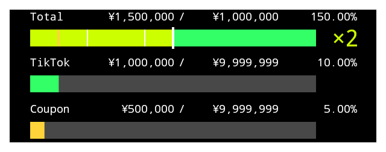
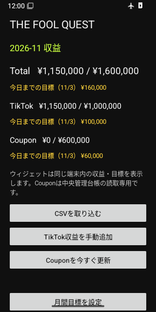

収益を、
ホーム画面に。
ホーム画面で収益を3段ゲージ、日別カレンダー、ゲージ＋カレンダーの3種類から選んで表示できます。既存の収益・目標・設定を引き継いで更新できます。

code20をAndroid 35で描画した検証画像。黄色の細線が今日までの累計目標、白線は従来の周回進捗の境界です。数値は検証用で、実収益ではありません。
収益管理画面の目標金額

同じ署名でcode19から上書きした後の画面です。表示金額は検証用です。
「表示設定・進捗ゲージ」→「Total：今日までの目標線」で色・太さを変更できます。初期値は黄色・2dp、太さは1〜8dp。設定後は「保存」を押してください。収益管理画面はTotal・TikTok・Couponそれぞれの下に目標金額を表示します。
日本時間0時の更新に合わせる場合は「0時の更新を許可する」からアラームとリマインダーを許可してください。未許可時や端末の省電力制御では更新が遅れる場合があります。
文字32・左右余白17/16・上下0/0・行間5・ゲージ14・文字とゲージの間隔4を基準にしています。保存済みの値は保持し、「写真2の基準へ戻す」でレイアウトだけを戻せます。
プレビューと保存は画面上部に固定し、設定項目だけをスクロールできます。3周目の短い塗りにも虹の全色が入ります。基準に戻した後は上の「保存」でホームへ反映してください。
更新と過去データの移行
- 現在のAru-MyBestをアンインストールせず、v0.1.30 / code31 APKで更新します。
- アプリの「収益・損失履歴の編集」で、全期間・年別・月別の4列表と既存収益を確認してください。
- 色・文字・余白・ゲージ設定は「表示設定・進捗ゲージ」から編集できます。旧サイト連携のボタンは表示されません。
- バックアップや旧サイトからのデータ復元が必要な場合のみ、管理トップの「バックアップ・復元」を開いてください。
保存済み収益・月間目標・既存ウィジェットはそのまま維持する仕様です。元サイトや旧APKは削除せず、必要に応じてJSONバックアップを保管してください。
クーポン日別の初回設定
- 中央Ledgerで読取専用キーを開く。中央Ledgerの管理者ログインが必要です。
- Aru-MyBestで「クーポン日別の接続設定」を開き、キーを貼り付けて保存します。
- ホーム画面に「Aru-MyBest 収益カレンダー」ウィジェットを追加します。設定後の日別更新は自動です。
クーポン収益は中央Ledgerの月額と同じ範囲で、単価が設定済みの当選分を表示します。カレンダーには当日分のクーポン収益も表示します。翌日以降は空欄です。
TikTok Lite・クーポンの損失を記録
Aru-MyBestの収益管理で「TikTok Liteの損失を手動追加」「クーポンの損失を手動追加」から日付と損失額を登録できます。登録済み損失の編集・削除は「収益・損失履歴の編集」で行えます。
日別カレンダーは上から合計 → C（クーポン獲得額）→ T（TikTok Lite獲得額）→ −（2種類の損失合計）の順に表示します。赤字のマイナスはTのすぐ下です。TとCは損失を引く前の収益のまま残り、日別合計は「T＋C−損失」です。月間合計と3段ゲージも損失を一度だけ控除します。元CSVやクーポン中央台帳の収益は改変しません。4つの行は独立した部品なので、将来はcalendar_day.xml内の4つのinclude行を入れ替えるだけで表示順を変更できます（並び替え操作ボタンは追加していません）。
えらべるPayのポイント履歴
収益管理の「データ更新（ポイント履歴を自動取得）」を押すと、アプリ内で当月分のCSVを取得します。未ログインの場合は「ログイン画面を開く」か、サイトに表示されたボタンからログインしてください。履歴に戻ると取得を再開します。手元のファイルは「CSVを取り込む」から選べます。
毎日の操作
| タップ | アプリ内の収益管理画面を開きます。表示設定・収益履歴へ移動できます。Couponは30分間隔または管理画面から更新します。 |
| 自動更新 | 収益は30分間隔。目標線は日本時間0時に再計算します。アラーム許可や省電力制御によって遅れる場合があります。 |
| 長押し | サイズ変更。カード背景と3行の配置、ゲージの太さが枠の高さに合わせて変わります。文字は固定欄に収まる上限まで拡大します。設定メニューの有無はホームアプリによります。 |
| 表示設定 | 黒／白、色、透過率、文字サイズ、四方向余白、ステータス行間、文字とゲージの間隔、ゲージの基準太さと色、Totalの目標線の色と太さ。 |
| 進歩カラー | 今日までの目標に対して100%以上＝達成色（既定：緑）、50%以上100%未満＝未達色（黄）、50%未満＝不足色（赤）。達成・未達・不足・2周目の4色はそれぞれ変更できます。目標は月間目標×日本時間の日付÷当月の日数。収益・目標不明や古い月は灰色。ゲージの長さと％は月間達成率です。表示設定でOFFにすると保存済みの固定色を使用します。 |
| 通信失敗 | 前回の正常取得値を保持。時間切れ・未接続・サーバー応答などの理由を表示します。アプリの設定画面では復旧後も直近の失敗理由を確認できます。 |
確認状況
v0.1.30 / code31。日別の縦順を合計→C→T→赤字の損失に修正し、行単位の部品化で将来の順番変更を容易にしました。CとTはそれぞれ獲得額を保持し、合計のみT＋C−損失を計算します。月間合計、ゲージ、CSV・Coupon元データ、年月切替、文字サイズ、表示設定を維持。Android35総合試験とcode30からの上書き保持試験に成功。実機の上書き・表示は未確認です。
GitHubソース・検証記録 · code31のAndroid 35回帰試験 · 上書き試験（code30 → code31）
APKの照合情報
SHA-256
8a9ed53b832e050e84853050917cf0a3f9124b29bbfd79f3b99542e1d20bccc7
署名証明書 SHA-256
8495f4b4b508ca5b24c2b7fd714b21963f5b1c0275659f434e3e0d9e239c6730